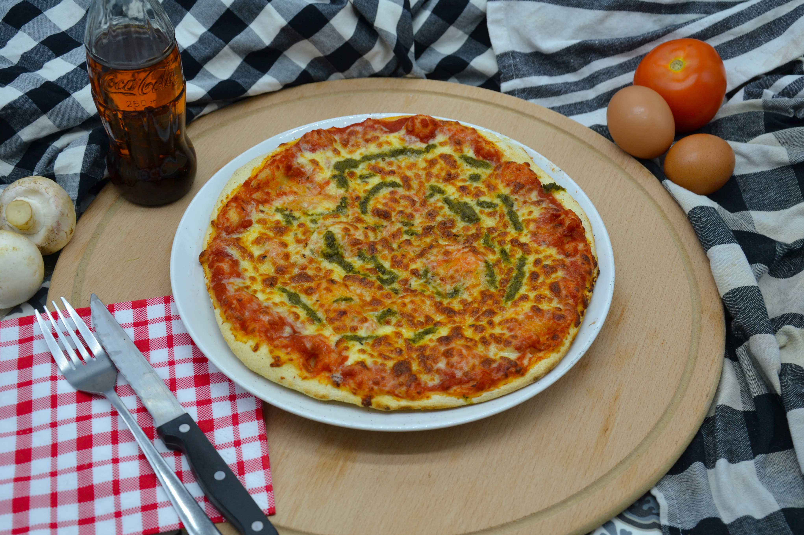
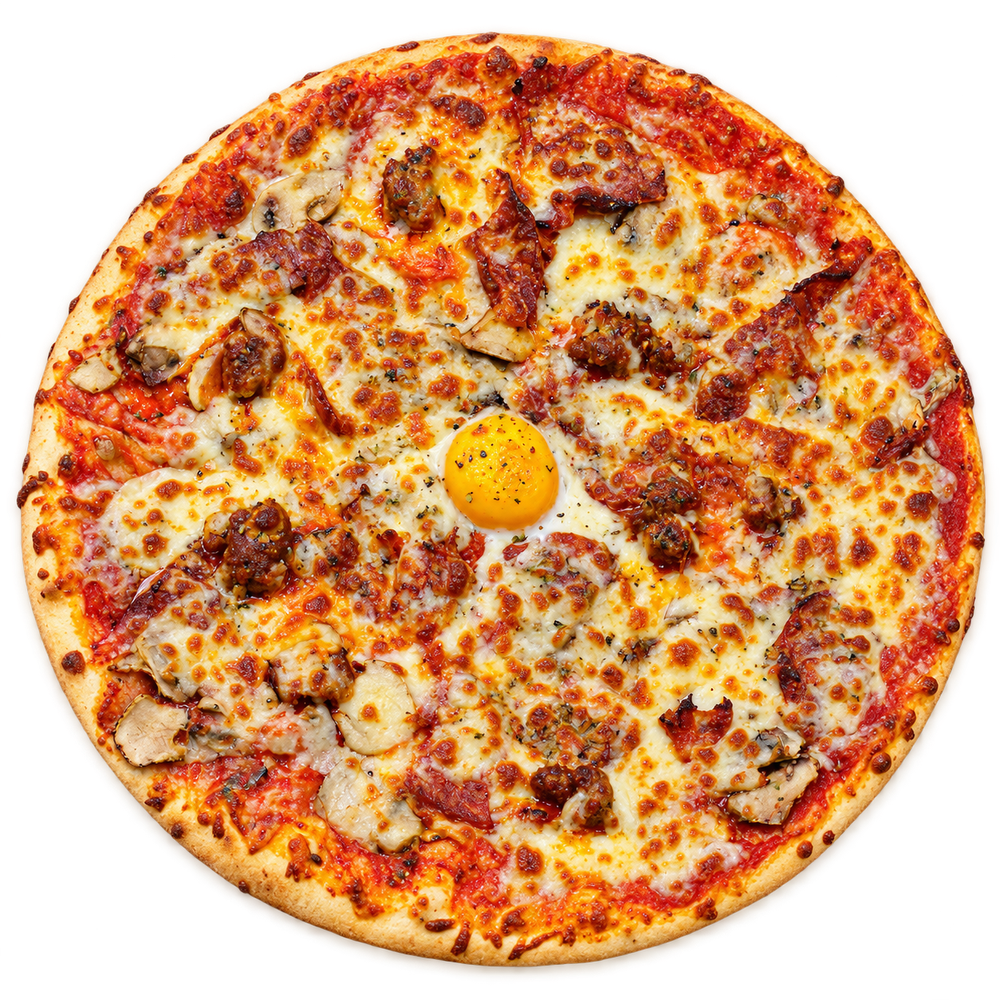
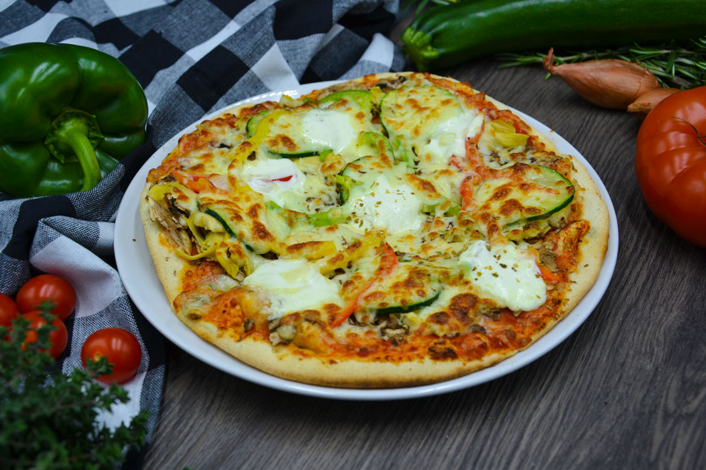
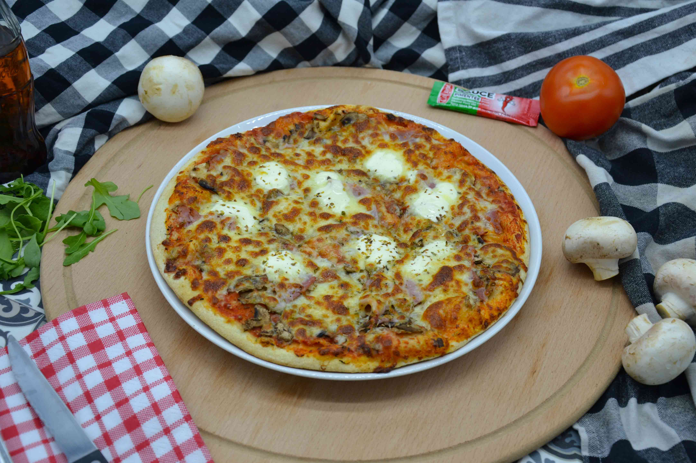

Margherita
Mozzarella, Purée de basilic
- Ø26 cm
- 8,50 €
- Ø33 cm
- 10,50 €
- Ø40 cm
- 13,50 €
Les pizzas artisanales de Maestro,
à Clermont-Ferrand et Chamalières.
Une pâte croustillante, des recettes italiennes et des ingrédients choisis avec soin. Bienvenue chez Pizza Maestro.
Moutarde de Charroux, Mozzarella di Bufala… Des ingrédients de qualité pour nos recettes traditionnelles et originales.
26, 33 ou 40 cm : à chacun sa pizza. Retrouvez les ingrédients et les trois tarifs de chaque recette sur notre carte.
Appelez votre pizzeria ou retrouvez notre carte sur Deliveroo pour déguster votre recette préférée chez vous.
11,50 à 17,10 €
Mozzarella, champignons, rosette, chorizo fort, merguez et œuf.

Des classiques italiens aux recettes de Maestro.

Mozzarella, Purée de basilic

Mozzarella, Champignons, Artichauts, Courgettes, Poivrons, Pointe de crème fraîche

Mozzarella, Jambon, Champignons, Pointe de crème fraîche
Profitez de notre carte de fidélité lors de votre prochaine visite.
36 avenue des Paulines
04 73 90 53 3868 avenue Joseph Claussat
04 73 37 35 02